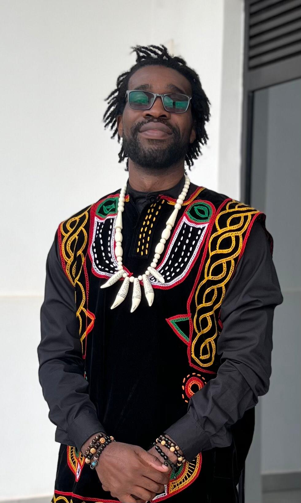

Joel Maison / The sports collectionData meets the game
A feel for the game.
A mind for the data.
I apply AI, modeling and software engineering to sports. Basketball also connects me to communities beyond the screen.
Explore the work ↓01 / Knowledge & AI02 / League technology03 / Predictive modeling
01 / Sports workMore than
More than
the final score.
Better access to basketball knowledge, better league operations, and models that make their assumptions visible.
02 / In the communityThe people
The people
behind the game.
Supporting youth basketball, helping leagues run and showing up for the communities that make sport matter.

03 / Keep the conversation goingGood work starts
Good work starts
with a connection.
Interested in sports technology, basketball development or a project at the intersection of data and the game?